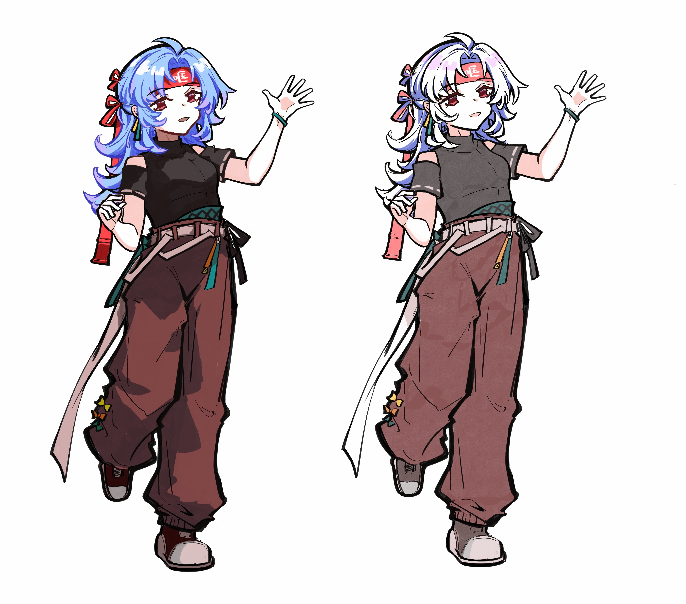
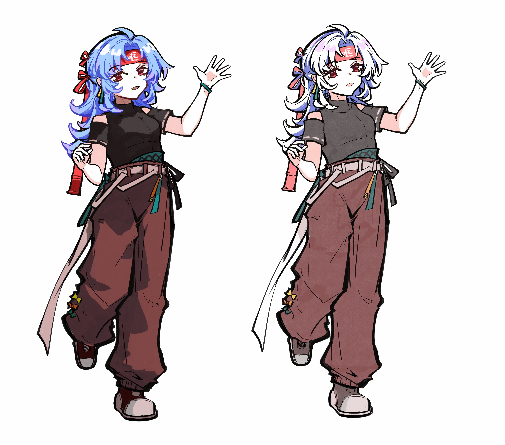

KQLQKQLQF的个人网站
欢迎来到kqlqkqlqF的网站！！
这是kqlqkqlqF网站的首页。请随意探索吧！XD
关于我！（关于我们）
—！！！前排提示，如果你想看些正经的东西，请跳过这段中二感溢出的自我介绍，直接阅读后面的内容！相信我，阅读它对你来说除了让你尴尬到脚趾抓地以外没啥好处！—


【这就是我！kqlq】
你好，正在阅读这段文字的可爱读者。我是kqlq，当然，这并不是我的本名，也只是我众多网名中的一个。wodh，况且，哐切咧切，这些都是我曾经用过或者正在使用的网名。理所当然地，这些网名代表的是不同于我现实生活中展示出的另外一面，而现在，我将毫无保留地向你展示出这一面的全部。这个简朴的个人网站展示了我过去完成的一些项目，以及我的各种兴趣爱好催生出的一些成品。亲爱的读者，在你接着阅读下面的内容前，我想先用一句话简单的概括一下我自己。你可以把我想象成一个古怪的创作爱好者，最擅长的事情就是随时随地沉浸在自己天马行空的幻想中……低情商地说，大概是胡思乱想 :( 接下来，就让我们一起走进这个少有人踏足的世界吧。
首先，我们来进行一些对于“冯一伊”这个现实世界侧面的介绍。目前，我正在多伦多大学攻读基因生物学及统计学士学位，听起来会觉得我像一个标准的理科生，对吧？但其实从初中开始，我就有一个成为艺术创作者的梦想。不过，因为我在选择大学专业时并没能发现自己对于创作的喜程度爱，以及对于就业前景的不了解，导致我在本科时没有选择艺术类专业。不过，我绝不认同“本科的四年时间完全被浪费了”这种荒唐的说法，因为在这四年中，我学到了很多完全没想到自己会接触和掌握的知识，比如用rcode分析数据，在实验室提取DNA等等，没有这些经验，我甚至没法创造出你现在看到的这个个人网站。另外，这四年间我也一直在试图做一些突破舒适圈的事情，比如在水吧兼职服务生到凌晨；在完成学校功课的同时自学画画以及各种创作者需要的软件，比如Blender和AE；再比如在社交媒体上发布一些二次创作的作品。我能够自豪地说，这四年间的一切经历，无论好或坏，看起来有用或者浪费时间，共同塑造了现在的我。我感谢这些经历，自豪于拥有这些经历，并从中获取力量与知识。而现在，从多伦多大学本科毕业后，我即将Gap一年以集中精力完成我的作品集，并在2025年年底申请数字媒体方向的研究生，正式开始我成为专业创作者的旅程。这将会是一个新的挑战，而我将继续全力以赴。
现在，来说一说“kqlq”这个网络身份的轻松有趣的事情吧！我是一名二次元以及游戏爱好者，RPG游戏是我永远的心头好。在学习之外的空闲时间，我非常乐于花大把时间在创作自己构思的世界观以及相关虚构角色的故事上，有时候，当我被游戏或者动画中的情节感动，我也会为这些角色进行二次创作，产出一些同人图，同人动画之类的内容。在下面，我贴上了一些我的作品，它们有的是我在几年前，技巧青涩时完成的，有些是相对近期的作品。我明白自己的制作水准距离成熟还有很大的差距，我会继续带着满腔热枕行走在这条道路上，并保证每次创作出的作品都是当下我能够做到的最好。我希望我在25岁之前能够熟练的掌握绘画与制作三渲二动画的技巧，并且正在为这个目标努力。让我感到遗憾的是，尽管这是我自己热爱的部分，但我反而写不出长篇大论，因为我总觉得我目前画画以及动画制作的水平依旧有比较大的差距，长篇大论，大谈理想，只会让我显得自大而不切实际。所以，借着上研究生的机会，我将会将所有的精力投入到对创作知识的追赶与学习中去，让真正好的作品代我说话。
总而言之，我只是一个普通的大学生。在有着对未知的强烈探索欲望的同时，也总能为我的目标积极行动起来。所以，亲爱的读者，一起踏上这场称为生活的旅程吧——它一定会是一场精彩的冒险！ （而我，或者说我们…在我天马行空的设定中，“冯一伊”是我在现实世界的化身，而“kqlq”是我在网络以及创作世界的虚拟投射。冯一伊冷静，理性，善于交流；而kqlq有着细腻的心思，具有创作者所需要的公卿力以及感性。不，我并不是一个精分患者，这只是我的一个幻想设定而已。冯一伊与kqlq各代表了我的一部分，而就像事物总有两面性，少了任何一个侧面，我都不再是我自己。所以，不用担心你见到的到底是冯一伊还是kqlq，因为如果你见过其中的一个，那必然也会见到另外一个。）
我（们）制作的视频
【崩铁MMD/三月七】水墨风格剑舞渲染尝试/长生诀
【崩铁小动画】星期日：感觉身上有砂金在爬 [期理砂]
【崩坏三手书】奥托单人向——Regression
我有时会在BILBILI视频网站发布新的视频，图片类的作品会被发到小红书和Lofter这两个平台。我制作的视频主要是二次元作品的相关二次创作产物，包括小剧场，MMD和手书。原创角色和世界观的视频也在制作中。
我（们）的Github主页

里面保存了一些我（们）以前写过的有关于数据分析的论文，以及支持本个人网站页面的相关代码。对于每个repository里文件的具体用处都在Readme中列出来了，读完就能速通这些乱七八糟的文件夹咯。
我（们）的画

 
 


×
（左右/上下滑动查看更多作品，点击画面可以查看清晰度更高的大图）
我（们）的社交媒体账户首页
BILIBILI账号：
BILIBILI主页可能登录才能显示，可以直接搜索BILIBILI账号：哐切咧切。
小红书账号：
小红书账号id：哐切咧切_kqlq
Lofter账号：
Lofter主页可能登录才能显示，可以直接搜索lofter账号id“wodhkqlq”。
我（们）的简历
平平无奇，这就是回归生活后真实又正经的我（们）。
如果你想联系我（们）
看到这里，如果你还没有被我（们）美好的精神状态吓到，欢迎通过以下的联系方式联系我,一起交流！
微信账号：kqlqkqlq
电话：（+86）13718814903/（+1）4376843188
邮箱地址：kqlqkqlqkqlqkqlq@gmail.com 或 kqlqkqlqkqlq@163.com